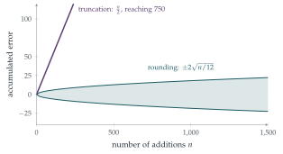

STEP II 1993, Question 15
Read the question before you go on. It is in the STEP Support Programme’s question database: step.maths.org/questions/93-s2-q15
The hook
In 1982 the Vancouver Stock Exchange launched a new index, starting at \(1000\). Every time a share price changed, the index was recalculated and truncated to three decimal places. Each truncation lost on average \(0.0005\), which seems negligible. But there were about \(3000\) recalculations a day, and after twenty-two months the index stood at around \(520\), even though the market had risen. When it was recomputed correctly, overnight it jumped to about \(1100\).
This question explains what happened. Truncation errors all point the same way, so they add up steadily, in proportion to the number of operations. Rounding errors point both ways and largely cancel: they grow only like the square root of the number of operations, the random-walk behaviour that the central limit theorem (Section 12.24) predicts.
Before you start
If a number’s fractional part \(U\) is uniform on \([0, 1)\), what is the error when it is truncated? When it is rounded? What are the mean and variance of each?
Truncation replaces \(a\) by \(\lfloor a\rfloor\), an error (true minus approximate) of \(U\), uniform on \([0, 1)\): mean \(\frac12\), variance \(\frac{1}{12}\). Rounding gives an error uniform on \((-\frac12, \frac12]\): mean \(0\), variance \(\frac{1}{12}\).
Working it through
Stage 1 The total errors
The total error after \(1500\) numbers is the sum of \(1500\) independent errors, approximately normal by the central limit theorem:
LEP (rounding): mean \(0\), variance \(\frac{1500}{12} = 125\), standard deviation \(\sqrt{125} \approx 11.18\).
VOZ (truncation): mean \(\frac{1500}{2} = 750\), the same standard deviation \(11.18\).
Stage 2 The probability of a large error
For LEP, what is \(\mathrm{P}(|E| > 15)\) with \(E \sim \mathrm{N}(0, 125)\)? For VOZ, where is the error almost certainly?
For LEP, \(\frac{15}{11.18} \approx 1.342\), so \[\mathrm{P}(|E| > 15) \approx 2\bigl(1 - \Phi(1.342)\bigr) \approx 2 \times 0.090 = 0.18.\] For VOZ, the error is about \(750 \pm 11\); the probability that it is less than \(15\) in magnitude is essentially zero, so \(\mathrm{P}(|E| > 15) \approx 1\).■
Stage 3 How many additions?
After \(n\) additions, LEP’s error has standard deviation \(\sqrt{n/12}\). When is \(\mathrm{P}(|E| < 10) \geq 0.9\)?
We need \(\frac{10}{\sqrt{n/12}} \geq 1.645\) (since \(\mathrm{P}(|Z| < 1.645) = 0.9\)), that is \(\frac{n}{12} \leq \bigl(\frac{10}{1.645}\bigr)^2 \approx 36.95\), so \(n \leq 443\). LEP can perform about \(443\) additions.■

Looking back
Model each error. Uniform fractional parts gave each error a simple distribution.
Add means and variances. Means add (giving the bias \(\frac n2\)) and, for independent errors, so do variances.
Normal approximation. The central limit theorem turned a sum of \(1500\) uniform errors into a normal distribution.
What’s really going on
Bias and variance
Truncation is biased: its errors have non-zero mean, and bias accumulates linearly. Rounding is unbiased, and its errors behave like a random walk, growing like \(\sqrt n\). After a million operations, the difference is between an error of order \(500\,000\) and one of order \(300\). This is the same distinction as between a systematic error in an experiment (a miscalibrated instrument) and random measurement error: averaging many measurements reduces random error but does nothing to systematic error.
Floating point
Every computer stores real numbers to limited precision, and every arithmetic operation rounds its result. Modern computers follow the IEEE 754 standard, which rounds to the nearest representable number, with ties broken towards an even last digit precisely so that rounding is unbiased on average. Even so, careless summation of many numbers can lose accuracy; William Kahan’s compensated summation algorithm (1965) keeps track of the lost low-order digits and adds them back. In the Gulf War in 1991, a Patriot missile battery failed to intercept an incoming missile because its clock counted time in tenths of a second, a number that cannot be stored exactly in binary; after \(100\) hours of operation the truncation error had grown to about a third of a second, enough to misjudge the target’s position by over half a kilometre.
The Vancouver Stock Exchange index was created in January 1982 with a value of \(1000.000\). By November 1983 it had fallen to about \(524\), despite a generally rising market. Consultants found that the index was being recalculated thousands of times a day and truncated (not rounded) to three decimal places each time. Recomputed correctly over a weekend, the index reopened at about \(1098\). The episode is a standard warning in courses on numerical computation.
The thinking skill
Errors with a consistent sign accumulate linearly; independent errors with mean zero accumulate like a square root. Identify which kind you have.
At university, numerical analysis studies how errors propagate through calculations, and statistics distinguishes bias from variance; the “bias–variance trade-off” is central to modern machine learning.
Try this next
VOZ corrected. If VOZ adds \(\frac n2\) to its answer at the end, what is the distribution of its error? Is it now as good as LEP?
Rounding to one decimal place. If numbers are rounded to one decimal place, with uniformly distributed discarded digits, find the standard deviation of the total error in adding \(10\,000\) numbers.
The Vancouver index. If the index was recalculated \(3000\) times a day and each truncation lost on average \(0.0005\), how much would it lose in a year of \(250\) trading days?
The exact distribution. For the sum of two rounding errors, find the exact density (a triangle). For three, sketch it. How quickly does it start to look normal?
Further reading
Nicholas Higham, Accuracy and Stability of Numerical Algorithms (SIAM). The authoritative book on rounding errors; the opening chapter is accessible.
David Goldberg, “What every computer scientist should know about floating-point arithmetic”, ACM Computing Surveys 23 (1991). A classic, free online.
Tim Harford, How to Make the World Add Up (Bridge Street), on systematic errors in data.